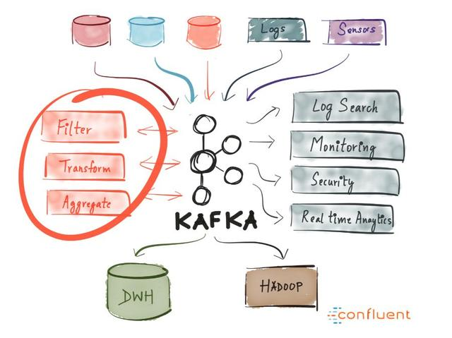
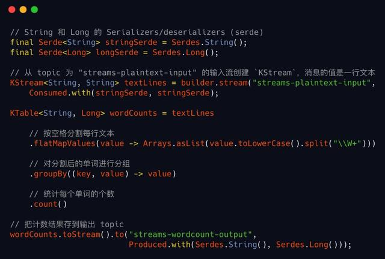

在过去的几年中，Apache Kafka 的功能和覆盖范围已经有了很大的提高。500强公司中有三分之一在使用 Kafka，包括全球 Top10 银行中的7家、Top10 保险公司中的8家、美国 Top10 电信公司中的9家。
首先我们看一下 Kafka 提供的2个核心功能：
（1）消息系统
消息被广泛用于2中方式：
队列
队列的消费者是一个worker组，每条消息只被其中的一个worker处理，高效的分摊了工作。队列非常适合容错和缩放。
发布/订阅
订阅者彼此独立，每个订阅者都会拿到每一条消息，就像一个广播系统。
发布/订阅模式方便我们对系统进行解耦。
（2）流处理
有了一个健壮、可扩展的消息系统，如果能方便的对消息数据流进行处理就更好了。Kafka 的 Stream API正是提供了这个功能，它是一个 Java 客户端库，提供了比 producer和 consumer更高级别的抽象。
Stream API 可以轻松实现：
无状态操作，例如信息流的过滤和转换
有状态操作，例如在一个时间窗口内的连接、聚合操作
流处理的示例代码
从输入流读取文本，对每个单词进行计数，然后把计数结果写到输出流

Kafka 的典型使用场景
例如一个旅游网站，酒店和机票的价格一直都在变。系统中的一些组件（例如价格告警、分析）需要得到这些变动通知。可以把变化信息发送到 Kafka topic 中，需要这些信息的组件作为订阅者来获取通知。
可以使用kafka对网站行为（页面浏览、搜索等用户产生的行为）进行跟踪和分析，事实上，这才是kafka的初始应用场景，LinkedIn 开发 kafka 时就是为了干这个。不同类型的行为数据发送到不同的topic中，实时进行分析，来获取用户的参与度、页面访问路径等有价值的数据，以支持网站的运营策略。
比如你有大量的位置数据，需要实时处理，来跟踪车辆路径、距离等等。可以把设备发送过来的位置数据放到 Kafka，然后使用 Stream API 来处理，例如对指定时间区间的某个用户的位置数据进行提取处理。
什么时候不要使用 Kafka?
对于需要与 kafka 集群进行沟通的服务，如果你不能或者不想使用 Java/Scala，那么建议不要使用 Kafka，否则将无法使用 Stream API。
如果你仅是需要一个任务队列，那么建议考虑使用 RabbitMQ。
如果每天仅需要处理几千条信息，那么 Kafka 就有点重了。Kafka 适用于大规模的流处理，Kafka 的搭建和维护都需要不小的成本，所以如果处理量较小就不值得了。


-
朝阳86624712 5天前 回复 0 -
边城射鸡师 6天前 回复 0 
泥蒿大V 5天前 回复 0 
星空之下li 3天前 回复 0 -
top16o 5天前 回复 0
查看更多评论真的很好用
又是区块链又是mq
视频流的处理不知是否适用？
转发了
转发了